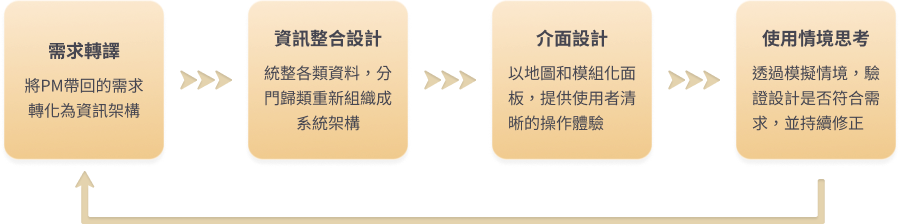
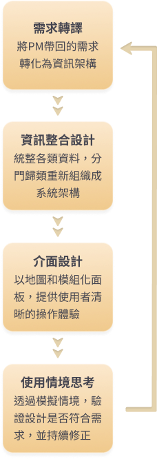
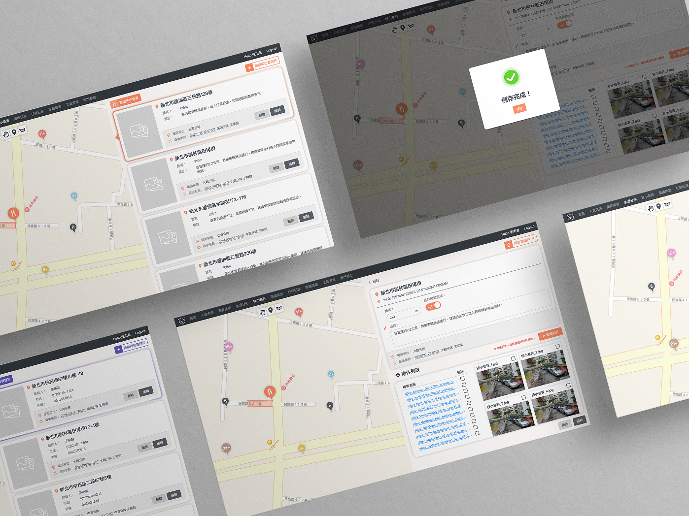
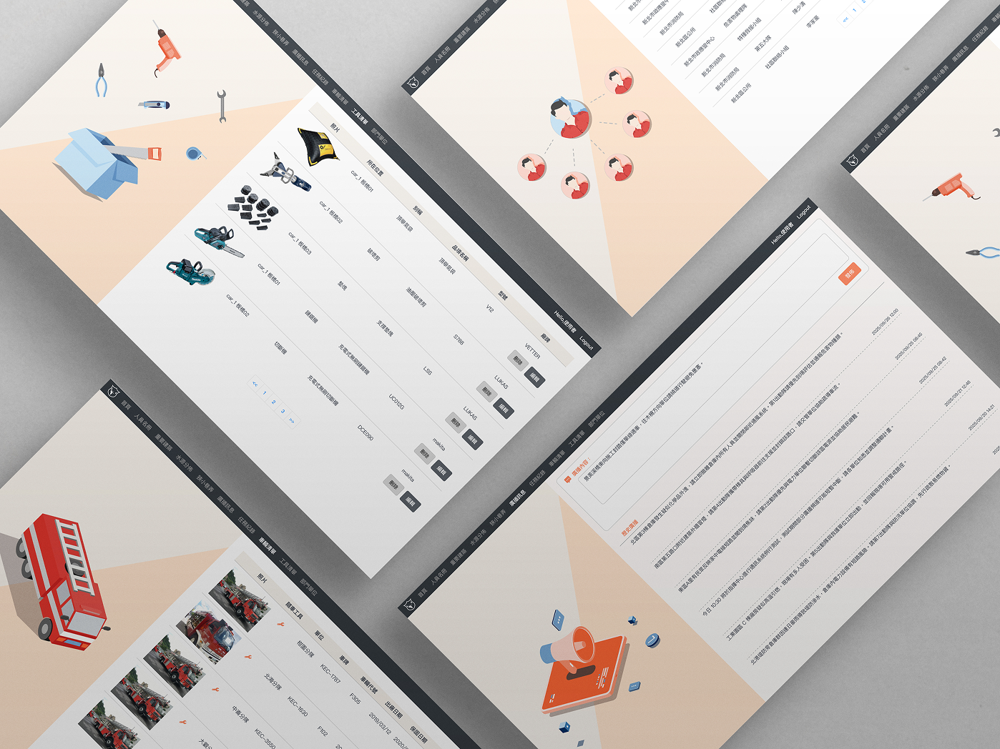

FIRECOMMAND｜火場安全管制系統
即時監控與人力調度，助力救援迅速到位
#UI設計
#切版
#RWD
專案背景
Background
本專案由消防車製造公司與消防局合作的專案，期望透過資訊系統強化火場管理與指揮調度能力。由專案經理與消防局進行需求討論，並由我負責將實際需求轉化為可落地的系統設計。
系統完成後，可支援消防局日常管理與火場決策，提升人員調度效率與安全控管。
系統完成後，可支援消防局日常管理與火場決策，提升人員調度效率與安全控管。
設計挑戰
1. 資訊龐大且複雜：人員、建築、水源、器材、任務等資料量大，現場指揮官需快速掌握關鍵資訊。
2. 多角色使用者：後台管理者與現場指揮官的需求不同，需設計專屬操作介面。
3. 現場壓力環境：決策需快速、資訊不能出錯。
2. 多角色使用者：後台管理者與現場指揮官的需求不同，需設計專屬操作介面。
3. 現場壓力環境：決策需快速、資訊不能出錯。
角色定位
My Role
在本專案中，我負責將消防局與 PM 帶回的需求，轉化為可落地的系統設計，並確保前後台介面對不同角色直覺且易操作。
需求轉譯
1. 將PM 與消防局的需求拆解，轉化為清晰的資訊架構與互動流程。
2. 針對不同角色設計操作優先順序，確保現場操作直覺、管理端操作完整。
2. 針對不同角色設計操作優先順序，確保現場操作直覺、管理端操作完整。
資訊整合系統
1. 將人員、建築、水源、車輛、器材等多方面資料重新組織，歸納為核心模組。
2. 將後台資料與前台即時需求做整合，確保資料正確且即時可用。
2. 將後台資料與前台即時需求做整合，確保資料正確且即時可用。
介面設計
1. 以地圖為核心視覺，搭配模組化面板，讓指揮官能在壓力情境下快速理解資訊。
2. 設計分層資訊、即時廣播與警示功能，降低誤判風險。
2. 設計分層資訊、即時廣播與警示功能，降低誤判風險。
使用情境思考
1. 模擬火場決策場景，確保快速反應與資訊正確。
2. RFID人員辨識與氣瓶計時功能，使安全官能即時掌握人員狀態，降低危險。
2. RFID人員辨識與氣瓶計時功能，使安全官能即時掌握人員狀態，降低危險。
透過這些設計，系統不只是資料庫，而是即時支援現場決策的管理平台，提升救災效率與安全。


系統總覽
System Ｏverview
後台管理系統
1. 提供完整資料整合與管理，支援日常操作與搶救後檢討。
2. 核心設計價值：資料即時性、可視化查詢、模組化架構，為前台 iPad 提供可靠資訊來源。
2. 核心設計價值：資料即時性、可視化查詢、模組化架構，為前台 iPad 提供可靠資訊來源。
前台 APP 系統
1. 將後台資料轉化為 現場可操作的即時工具，支援指揮官快速決策與人員調度。
2. 核心設計價值：以地圖為核心的主控台、分層資訊顯示、即時警示功能，提高決策效率與現場安全。
2. 核心設計價值：以地圖為核心的主控台、分層資訊顯示、即時警示功能，提高決策效率與現場安全。
前後台互補
後台：資料庫與檢討工具，確保資訊完整。
前台：現場即時操作介面，快速呈現關鍵資訊。
前台：現場即時操作介面，快速呈現關鍵資訊。

